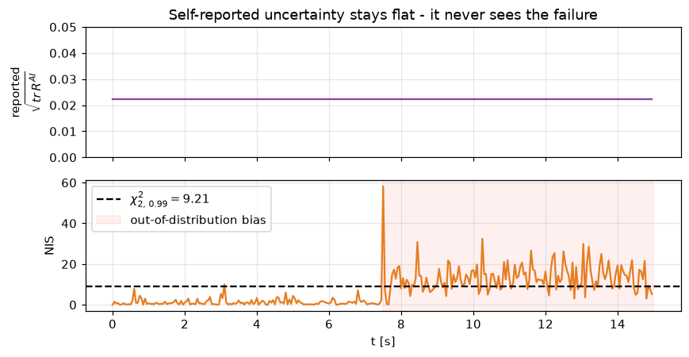

# Environment check
import numpy as np, matplotlib
print("numpy", np.__version__, "| matplotlib", matplotlib.__version__)numpy 2.5.1 | matplotlib 3.11.0
Modern driver-assistance and automated-driving systems increasingly replace hand-engineered perception with learned components: a neural network maps camera pixels to the quantities a controller needs (lane offset, obstacles, other agents). This works well inside the conditions the network was trained on - its operational design domain (ODD) [1] - and can fail silently outside it. A blurred lens, low sun, an unusual road geometry, or simply an input unlike anything in the training set can make the network confidently wrong.
The danger is specific to a closed loop. A wrong perception estimate is not just a bad number on a screen; it is fed straight into a controller that acts on it, and the vehicle moves. So the question this course studies is not "how accurate is the perception?" but:
Given an imperfect, learned perception system, when should we trust it enough to close the control loop on it, and what should happen when we should not?
We answer it with three ingredients, each in its own notebook: a way to quantify perception uncertainty (04-05), a way to decide whether the system is inside its competence (06), and a way to act on that decision by sharing authority with a human driver (07). The same monitoring theme appears in recent work on perception-system fault detection [9], integrity monitoring of learned detectors [10], and ODD monitoring under uncertainty [11].
We study the smallest closed loop that still contains the real difficulty. Symbols are collected in the notation table near the end.
Plant. A vehicle tracking a lane, written in error coordinates x=[e_y,\,e_\psi]^\top (lateral offset [m], heading error [rad]), driven by the steering angle u=\delta, with road curvature \kappa as a measured disturbance:
Perception. A camera produces an image \mathcal{I}_k = g(x_k,\,c_k) that also depends on the conditions c_k (brightness, blur, occlusion, curvature). A learned estimator h_\theta inverts it into an estimate of the state together with a self-reported covariance R_k^{AI} (how uncertain the network believes it is):
Controller. A feedback law acts on an estimate of the state,
and the naive choice is \hat x_k = \hat y_k: trust the network completely.
The missing layer. Between (2) and (3) we insert a monitor that outputs an integrity score I_k\in[0,1] and an authority \lambda_k\in[0,1] - how much of the automation command to apply, versus the human. Constructing I_k and \lambda_k well is what the rest of the course is about.
A prediction can be uncertain for two very different reasons [7]:
Both can be reported as a covariance, and both share one failure mode: in a genuinely novel regime a network can be confidently wrong - every ensemble member agrees, R_k^{AI} stays small, yet the estimate is biased. Uncertainty reported by the model alone cannot detect this, because the model is the thing that is wrong.
The classical remedy, from estimation and fault-detection theory [2,3,4,5], is an independent, model-based check. Run a Kalman predictor from the physics (1) to predict what the measurement should be, then test the innovation \nu_k=\hat y_k - C\hat x_{k|k-1} against its own covariance S_k = C P_{k|k-1} C^\top + R_k^{AI} via the normalised innovation squared:
Under the hypothesis that model and measurement are consistent, S_k^{-1/2}\nu_k is standard normal, so \mathrm{NIS}_k \sim \chi^2_m with m=\dim(\hat y) degrees of freedom [3]. A value above the \chi^2 threshold flags a mismatch even when R_k^{AI} is small - that clause is the entire point, and the experiment below demonstrates it. (The term integrity monitoring itself comes from aviation and GNSS receiver autonomous integrity monitoring [16], where deciding when an estimate must not be trusted is safety-critical.)
Finally we fuse three complementary signals into a single score so that any one of them can veto trust (notebook 06):
# Environment check
import numpy as np, matplotlib
print("numpy", np.__version__, "| matplotlib", matplotlib.__version__)numpy 2.5.1 | matplotlib 3.11.0
Here is the central effect, before we build anything. We feed a monitor a stream of perception measurements of a smoothly moving state. For the first half they are consistent; then we inject an out-of-distribution bias - the measurement becomes systematically wrong, but its reported uncertainty R^{AI} does not grow (the network stays confident). Watch which signal reacts. This is exactly the mechanism of notebook 05, shown here only to motivate the course.
import numpy as np, matplotlib.pyplot as plt
L, Ts, V, CHI2 = 2.7, 0.05, 15.0, 9.210
A = np.array([[1, V*Ts], [0, 1]]); E = np.array([0, -V*Ts]); Q = np.diag([1e-4, 1e-4])
rng = np.random.default_rng(1)
x = np.zeros(2); P = np.diag([0.05, 0.02]); true = np.zeros(2)
srep = np.array([0.02, 0.01]) # reported std - CONSTANT throughout
N = 300; sig, nis = [], []
for k in range(N):
kappa = 0.012*np.sin(2*np.pi*k*Ts/6)
true = np.array([true[0] + V*np.sin(true[1])*Ts, true[1] - V*kappa*Ts])
bias = np.zeros(2) if k < 150 else np.array([0.22, 0.06]) # OOD bias for k >= 150
y = true + bias + rng.normal(0, srep)
x = A @ x + E*kappa; P = A @ P @ A.T + Q # KF predict (delta = 0)
S = P + np.diag(srep**2); nu = y - x
nis.append(float(nu @ np.linalg.solve(S, nu))); sig.append(np.sqrt((srep**2).sum()))
Kg = P @ np.linalg.inv(S); x = x + Kg @ nu; P = (np.eye(2) - Kg) @ P
t = np.arange(N)*Ts
fig, ax = plt.subplots(2, 1, figsize=(8, 4.2), sharex=True)
ax[0].plot(t, sig, color="#8e44ad"); ax[0].set_ylim(0, 0.05)
ax[0].set_ylabel("reported\n$\\sqrt{tr\\,R^{AI}}$")
ax[0].set_title("Self-reported uncertainty stays flat - it never sees the failure")
ax[1].plot(t, nis, color="#e67e22")
ax[1].axhline(CHI2, ls="--", color="k", label="$\\chi^2_{2,\\,0.99}=9.21$")
ax[1].axvspan(150*Ts, N*Ts, color="red", alpha=0.06, label="out-of-distribution bias")
ax[1].set_ylabel("NIS"); ax[1].set_xlabel("t [s]"); ax[1].legend(loc="upper left")
for a in ax: a.grid(alpha=0.3)
plt.tight_layout(); plt.show()
print("mean NIS in-distribution: %.1f | out-of-distribution: %.1f"
% (np.mean(nis[:150]), np.mean(nis[150:])))
mean NIS in-distribution: 1.3 | out-of-distribution: 13.6
The top panel is what an uncertainty-threshold rule watches: it never moves, so that rule stays silent through the entire failure. The bottom panel is the model-based NIS - it crosses the \chi^2 line as soon as the measurement stops agreeing with the physics. A monitor built only on the network's self-reported confidence is blind here; a monitor that also checks consistency with a model is not. Everything else in the course - the controller, the ODD, the integrity score, the shared control - exists to turn this detection into safe action.
The capstone (notebook 08) compares three ways of using the same perception, stated here as decision rules.
Naive AI - trust completely: \hat x_k = \hat y_k,\qquad u_k = \pi(\hat x_k),\qquad \lambda_k = 1.
Hard handover - switch fully to the driver when the reported uncertainty crosses a threshold \tau: \lambda_k = \begin{cases} 1 & \mathrm{tr}\,R_k^{AI} \le \tau \\[2pt] 0 & \text{otherwise.} \end{cases} As the experiment above shows, this never triggers on the confident-but-wrong out-of-distribution case.
Proposed (integrity-aware) - filter the estimate, fuse the integrity score (5), then share authority smoothly and contract the operating envelope: u_k = \delta^{ff}_k + \lambda_k\,\mathrm{fb}_A(\hat x_k) + (1-\lambda_k)\,\delta^{H}_k, \qquad \lambda_k = \Phi(I_k, W_k),\qquad v^{ref}_k = v_{nom}\,(0.4 + 0.6\,I_k), where W_k is the driver workload and \delta^{H}_k the human command (notebook 07). The map-based feed-forward \delta^{ff}_k is always applied; only the feedback authority is arbitrated (notebook 02 explains why).
| # | Notebook | You build / learn | Key equations |
|---|---|---|---|
| 01 | 01_vehicle_model |
Kinematic lane-error model; discretisation; linearisation; controllability | (1) |
| 02 | 02_lqr_control |
LQR from the Riccati equation; curvature feed-forward; gain scheduling | (3) |
| 03 | 03_perception_and_rendering |
Pinhole camera; synthetic lane images; realistic degradation | (2) |
| 04 | 04_uncertainty_ensembles |
Aleatoric vs epistemic uncertainty; deep ensembles | \Sigma^{AI} |
| 05 | 05_kalman_and_nis |
Kalman filter; innovation; the NIS consistency test | (4) |
| 06 | 06_odd_and_integrity |
Operational design domain; fusing signals into integrity | (5) |
| 07 | 07_shared_control |
Human driver model; authority arbitration; speed contraction | \lambda_k |
| 08 | 08_capstone_closed_loop |
Everything together: 3 methods x 4 scenarios | all |
| 09 | 09_advanced_ideas |
CUSUM change detection; conformal prediction; research directions | - |
Each concept notebook ends with short exercises. Prerequisites: basic linear
algebra, probability, and Python. No prior control-theory or deep-learning
background is assumed. Setup: pip install -r requirements.txt, then open the
notebooks in order.
| symbol | meaning |
|---|---|
| x=[e_y,\,e_\psi]^\top | lateral offset [m], heading error [rad] |
| u=\delta | steering angle [rad] |
| \kappa | road curvature [1/m] |
| v,\;L,\;T_s | speed [m/s], wheelbase [m], sample time [s] |
| \mathcal{I}_k,\;c_k | camera image and its conditions |
| \hat y_k | perception estimate of the state |
| R^{AI}_k,\;\Sigma^{AI}_k | reported / ensemble (epistemic) covariance |
| \hat x_{k\mid k-1},\;P_{k\mid k-1} | Kalman one-step prediction and its covariance |
| \nu_k,\;S_k | innovation and innovation covariance |
| \mathrm{NIS}_k | normalised innovation squared, eq. (4) |
| I_k\in[0,1] | integrity score, eq. (5) |
| \lambda_k\in[0,1] | automation authority |
| W_k | driver workload |
Automation levels and operational domain
Estimation, innovations and fault detection 2. R. E. Kalman. A New Approach to Linear Filtering and Prediction Problems. Journal of Basic Engineering, 82(1):35-45, 1960. doi:10.1115/1.3662552 3. Y. Bar-Shalom, X.-R. Li, T. Kirubarajan. Estimation with Applications to Tracking and Navigation. Wiley, 2001. (NIS / measurement consistency and chi-square gating.) 4. R. K. Mehra, J. Peschon. An innovations approach to fault detection and diagnosis in dynamic systems. Automatica, 7(5):637-640, 1971. doi:10.1016/0005-1098(71)90028-8 5. A. S. Willsky. A survey of design methods for failure detection in dynamic systems. Automatica, 12(6):601-611, 1976. doi:10.1016/0005-1098(76)90041-8
Uncertainty in learned models 6. B. Lakshminarayanan, A. Pritzel, C. Blundell. Simple and Scalable Predictive Uncertainty Estimation using Deep Ensembles. NeurIPS, 2017. arXiv:1612.01474 7. A. Kendall, Y. Gal. What Uncertainties Do We Need in Bayesian Deep Learning for Computer Vision? NeurIPS, 2017. arXiv:1703.04977 8. A. N. Angelopoulos, S. Bates. A Gentle Introduction to Conformal Prediction and Distribution-Free Uncertainty Quantification. Foundations and Trends in ML, 2023. arXiv:2107.07511 (see also V. Vovk, A. Gammerman, G. Shafer, Algorithmic Learning in a Random World, Springer, 2005.)
Monitoring for automated driving 9. P. Antonante, H. Nilsen, L. Carlone. Monitoring of Perception Systems: Deterministic, Probabilistic, and Learning-based Fault Detection and Identification. Artificial Intelligence, 2022. arXiv:2205.10906 10. H. Y. Yatbaz, M. Dianati, K. Koufos, R. Woodman. Integrity Monitoring of 3D Object Detection in Automated Driving Systems. IEEE ITSC, 2024. arXiv:2405.07600 11. T. Charmet, V. Berge-Cherfaoui, J. Guzman, A. Armand. Operational Design Domain Monitoring with Uncertain Measurements. IEEE ITSC, 2024. doi:10.1109/ITSC58415.2024.10919733
Shared human-vehicle control and trust 12. R. Luo et al. A Workload Adaptive Haptic Shared Control Scheme for Semi-Autonomous Driving. Accident Analysis & Prevention, 2020. arXiv:2004.00167 13. D. A. Abbink, M. Mulder, E. R. Boer. Haptic shared control: smoothly shifting control authority? Cognition, Technology & Work, 14:19-28, 2012. doi:10.1007/s10111-011-0192-5 14. N. Monsaingeon, L. Caroux, S. Langlois, C. Lemercier. Multimodal interface and reliability displays: effect on attention, mode awareness, and trust in partially automated vehicles. Frontiers in Psychology, 2023. doi:10.3389/fpsyg.2023.1107847
Change detection and the origin of "integrity" 15. E. S. Page. Continuous Inspection Schemes. Biometrika, 41(1/2):100-115, 1954. (CUSUM; used in notebook 09.) 16. R. G. Brown. A Baseline GPS RAIM Scheme and a Note on the Equivalence of Three RAIM Methods. Navigation, 39(3):301-316, 1992. (Integrity monitoring in aviation/GNSS.)